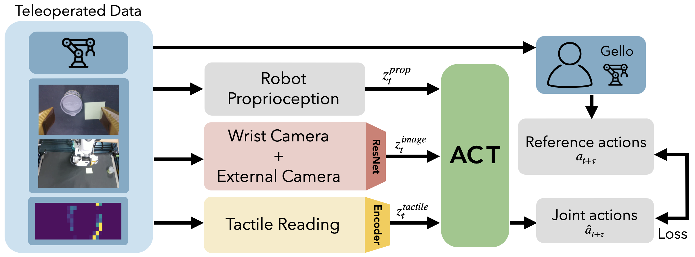
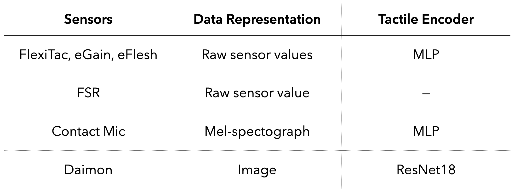
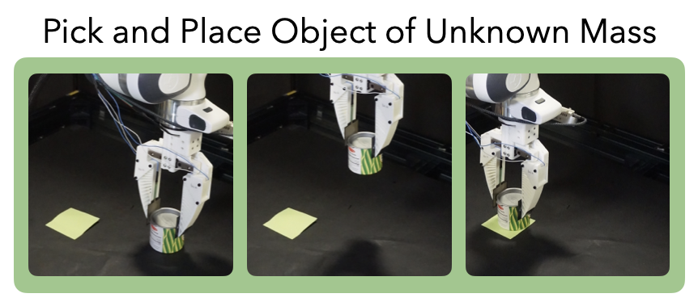
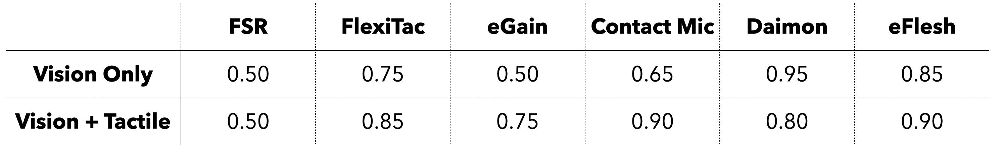
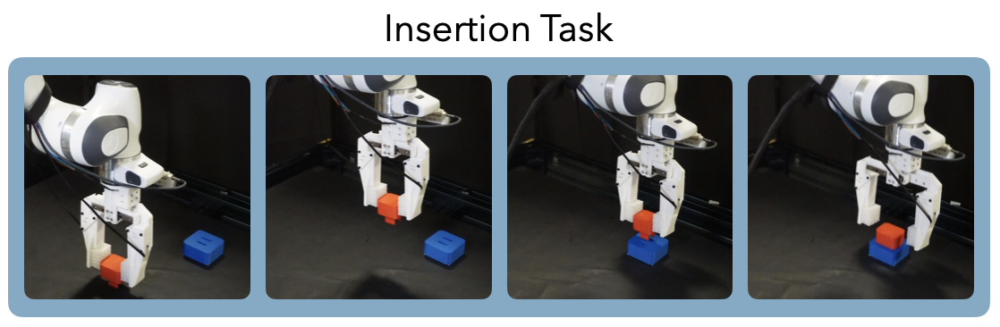
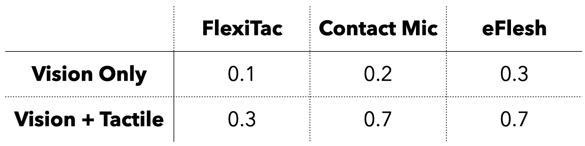
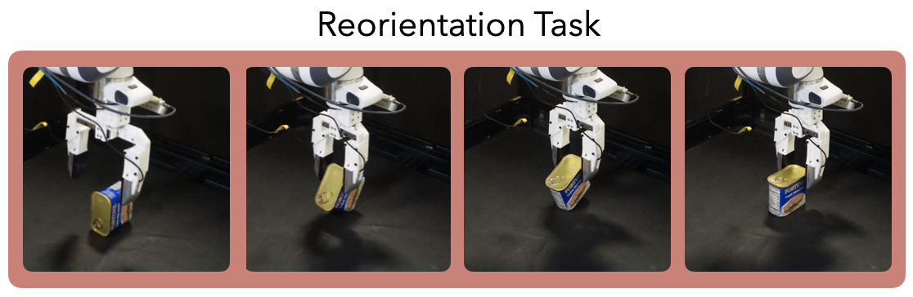
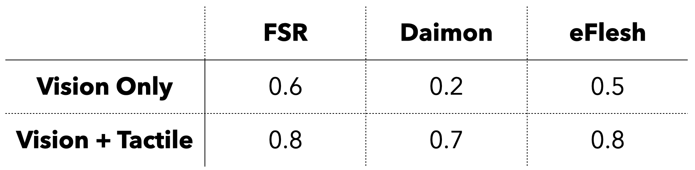
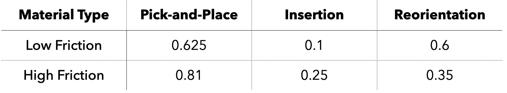
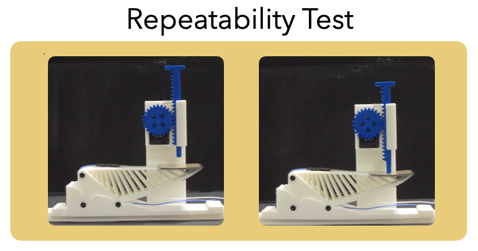

Abstract
Vision-based learning from demonstrations has achieved remarkable success in enabling robots to perform manipulation tasks and high-level semantic reasoning, yet it remains insufficient for complex, contact-rich manipulation. While there is broad agreement that tactile sensing improves manipulation, there is no empirical guidance on which tactile sensors are best suited for which manipulation tasks. In this paper, we provide a systematic, task-driven evaluation of tactile sensors for robot manipulation and propose a framework for selecting and evaluating sensors based on manipulation policy performance. Separate manipulation policies are trained for tactile sensors of four distinct modalities: visual, acoustic, magnetic, and resistive, across three tasks: pick-and-place with unknown mass, object reorientation, and plug insertion. For each task, an analysis of how sensor properties such as spatial resolution, shear sensing, and tactile representation, and the inherent material friction affect task performances is done. Rather than tactile sensing being universally beneficial in the same way, our results show that the usefulness of tactile information depends strongly on sensor modality, material properties, and the specific manipulation tasks.
Tactile Sensors
TacO benchmarks six tactile sensors across four modalities: visual, acoustic, magnetic, and resistive. The sensors represent a variety of sensing capabilities, including spatial resolution, shear sensing, and tactile representation.

Policy
An imitation learning policy adapted from ACT (Action Chunking Transformer) is trained per sensor for each task. Two policies are trained for each task-sensor combination: visuotactile and vision only. The two policies are trained on the same data, with the tactile data removed for the latter.

Depending on sensor modality, different tactile encoders are used.

The encoders and data representations in the tables are used in the experiments, and other encoders are tested in the paper.
Experiments
3 tasks








Acknowledgments
We thank Binghao Huang, Venkatesh Pattabiraman, Rui Yan, and Lars Paulsen for valuable feedback and discussions. This work was supported by grants from [TODO].
BibTeX
@preprint{TacO2026,
title={TacO: Benchmarking Tactile Sensors for Object Manipulation},
author={Anya Zorin and Zilin Si and Myungsun Park and Junsung Park and Alexiy Buynitsky and Sachin Bhadang and Taejun Park and Sohee John Yoon and Yong-Lae Park and Oliver Kroemer and Zeynep Temel and Michael T. Tolley and Sha Yi and Xiaolong Wang},
year={2026},
url={https://arxiv.org/abs/2605.21976}
}